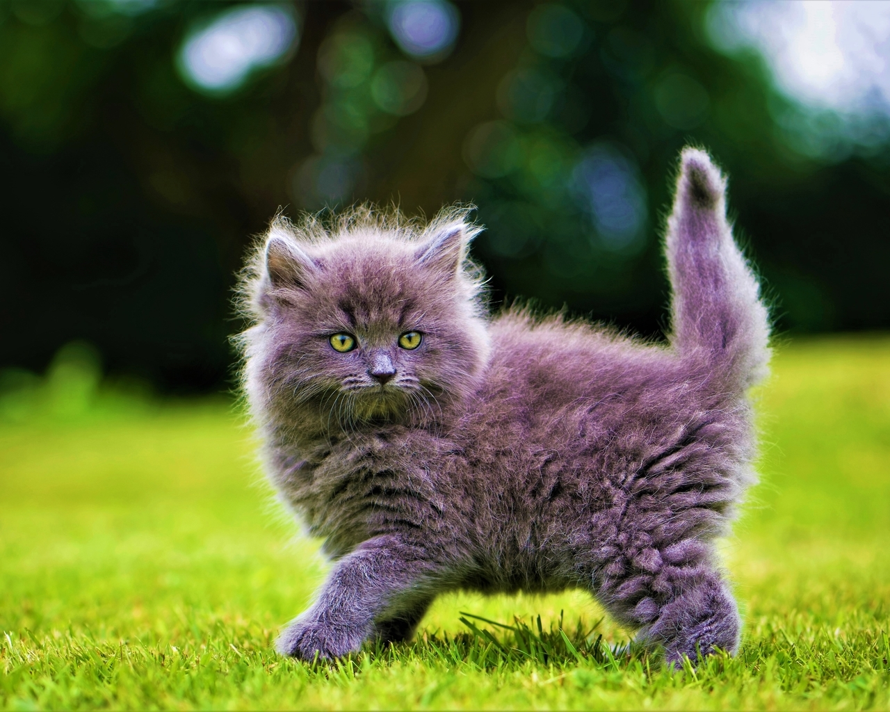

Нормальная температура тела у кошек около 38 градусов. Это чуть больше, чем у человека.
 Кошки чувствуют запахи в 14 раз сильнее, чем люди. У них 80 миллионов обонятельных рецепторов в носу.
Кошки чувствуют запахи в 14 раз сильнее, чем люди. У них 80 миллионов обонятельных рецепторов в носу.
Кошки мурлыкают с частотой 26 колебаний в секунду, причем делают это и на вдохе, и на выдохе.